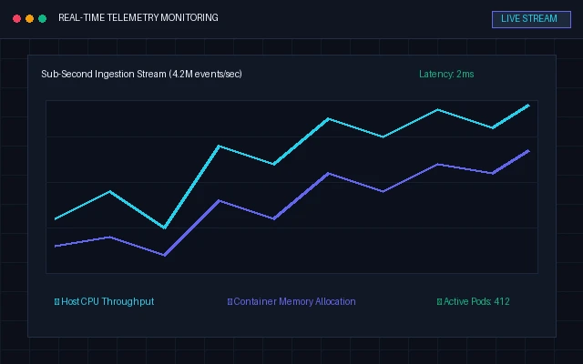
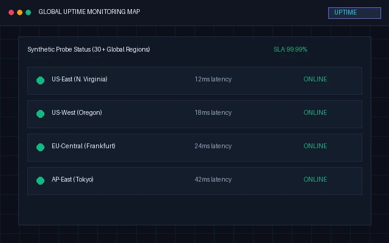
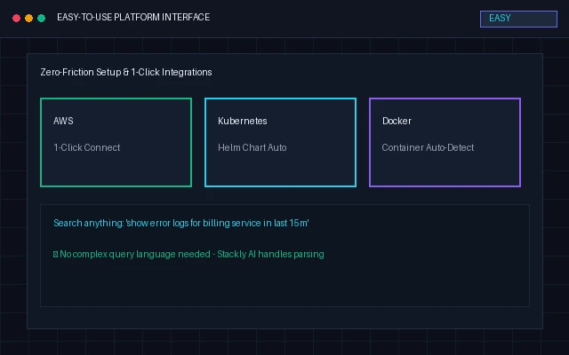
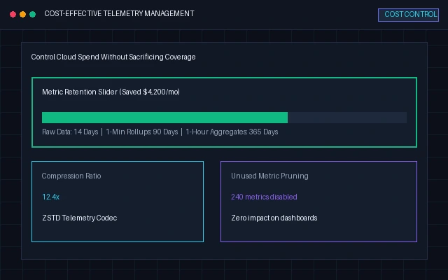

Why Stackly
Five reasons teams choose Stackly

Real-time monitoring
Live metrics across every host, container, and service — updated every second.

Reliable performance
99.99% uptime SLA and sub-second queries, even at billions of data points.

Easy-to-use platform
Live in under 10 minutes with drag-and-drop dashboards anyone can build.

Scalable solutions
From 5 servers to 50,000 — Stackly scales linearly with zero data loss.

Strong security
SOC 2 Type II, ISO 27001, AES-256 encryption, and region-locked residency.

Transparent pricing
Simple, predictable plans with no hidden fees — cancel anytime.